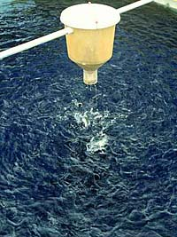
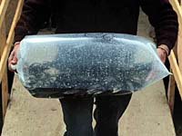

Fort Qu'Appelle Fish Culture Station  Throughout Saskatchewan, millions of fish are stocked each year to enhance fish populations. Fish culture plays and important part in sustaining and diversifying Saskatchewan's recreational fishing. The fish culture station helps the provincial fisheries in meeting its goals as set by the fisheries policy. | |||
Fish stock from the station is used to:
The station maintains non-native trout brood stock consisting of three species; rainbow, brook and brown trout. These 1,500 fish annually produce 800,000 fingerlings, including the hybrid species spake and tiger trout. These fingerlings are used to stock approximately 150 Saskatchewan waterbodies. Walleye eggs are gathered from wild stocks, captured each spring on traditional spawning grounds. This is usually as soon as ice break-up occurs. In May and June, about 40 million walleye fry are stocked throughout the province in approximately 100 waterbodies. Other native species (northern pike and lake trout) are raised and stocked by hatchery staff.  The station has the capacity to rear as many as 60 million fish in a given year, although actual production figures vary from year-to-year. Over the course of its lifetime, the Fort Qu'Appelle Fish Culture Station has supplied 1.9 billion fish to water bodies throughout the province.
|